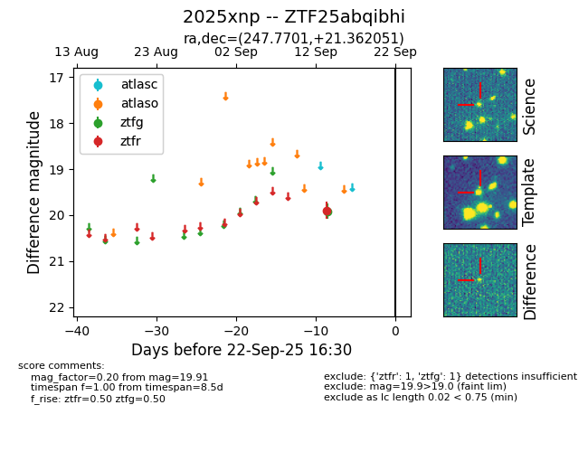

FINK: ZTF25abqibhi
Lasair: ZTF25abqibhi
ALeRCE: ZTF25abqibhi
TNS: 2025xnp
YSE: 2025xnp
ZTF25abqibhi (ztf,fink)
2025xnp (tns,yse)
equatorial (ra, dec) = (247.7701,+21.36205)
galactic (l, b) = (38.9303,+39.98299)

last ztfg=19.91, ztfr=19.89
1 ztfg, 1 ztfr detections